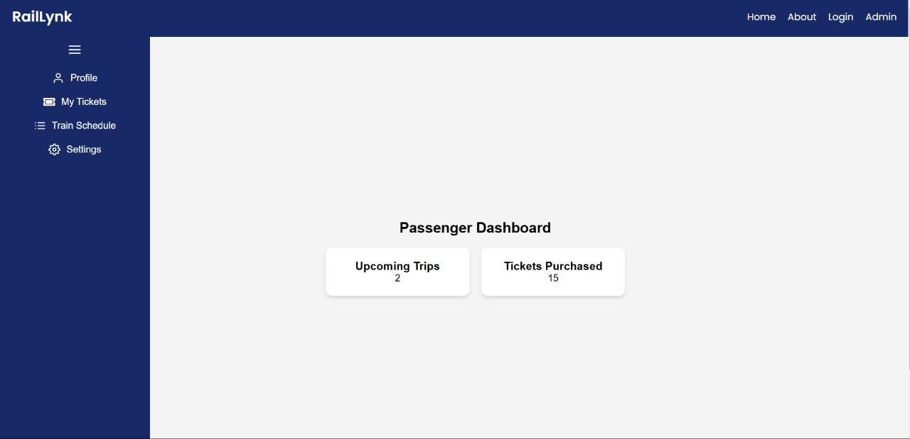
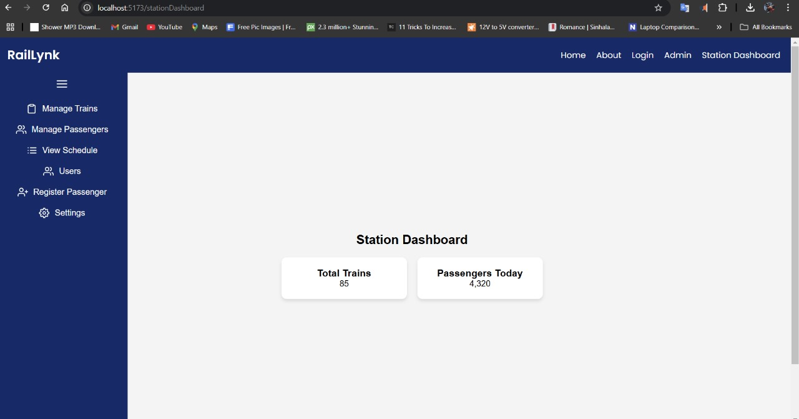

Introduction
A smart ticketing and navigation system for Sri Lanka Railways aims to modernize railway travel by introducing a seamless, digital experience for passengers. The smart ticketing and navigation system for Sri Lanka Railways introduces a card-based system, allowing passengers to tap in and out at stations for a seamless travel experience. This eliminates paper tickets, reduces queues, and ensures efficient fare collection. The system also provides real-time train schedules and route guidance, making railway travel more convenient and modernized.


Features
1. Smart Ticketing System
- Card-Based Ticketing: Customers tap their smart card to enter and exit stations.
- Automated Fare Deduction: Checks balance before entry and deducts fare upon exit.
- Secure Authentication: Verifies passengers before granting access.
2. Role-Based Dashboard
- Customer Dashboard: Displays travel history and balance.
- Station Dashboard: Enables station staff to monitor check-ins, train schedules.
3. Real-Time Train Tracking & Notifications
- Live Train Location Updates: Provides real-time train tracking for passengers.
- Delay Notifications: Alerts users about train delays or schedule changes.
4. Transaction Management & Fare Calculation
- Transaction Logging: Records entry, exit, and fare deductions.
- Recharge History: Stores passenger top-up transactions.
5. Seamless User Experience
- Contactless Entry & Exit: Passengers tap their card at gates for smooth access.
- Intuitive Web Interface: User-friendly portal for passengers and station operators.
6. Secure & Scalable System
- Data Encryption & Security: .....
- Scalability: System can expand to more railway lines and stations.
7. Backend & Technology Stack
- Django & React-Based System: Combines Django (backend) and React (frontend) for smooth performance.
- Database Management: Efficiently stores user data, transactions, and train schedules.
Solution Architecture

Hardware


Software
About Our Software
Our software revolutionizes Sri Lanka’s railway ticketing system by introducing a smart card-based ticketing solution that ensures seamless and efficient travel. This role-based system provides two dashboards:
- Customer Dashboard – Allows passengers to look their travel and check balances. 
- Station Dashboard – Enables station administrators to monitor train entries, transactions, and passenger movements. 
How It Works
- Smart Ticketing System: Passengers use a smart card to enter the train by tapping at the entry gate. The system verifies the card, checks the balance, and grants access if the amount is sufficient.
- Real-Time Travel Monitoring: At the exit station, passengers tap the card again. The system calculates the fare, deducts the amount from the balance, and records the transaction.
- Transaction & Data Management: The deducted fare is stored in the backend, and passengers can view their transaction history.
Our Smart Railway Ticketing & Navigation System is designed to make railway travel more efficient, secure, and user-friendly, providing a modern digital solution for Sri Lanka Railways. 🚆✨